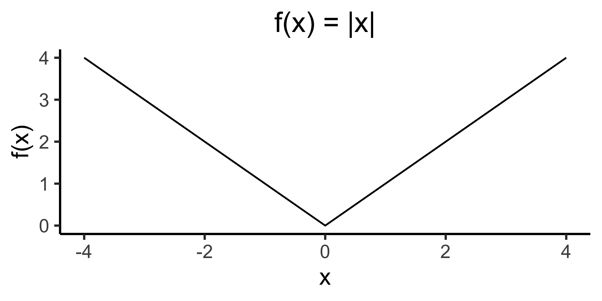

source("../_globals.r")Week 6: Continuous Distributions, Moments, Covariance
DSAN 5100: Probabilistic Modeling and Statistical Computing
Section 03
Class Sessions
Schedule
\[ \DeclareMathOperator*{\argmax}{argmax} \DeclareMathOperator*{\argmin}{argmin} \newcommand{\bigexp}[1]{\exp\mkern-4mu\left[ #1 \right]} \newcommand{\bigexpect}[1]{\mathbb{E}\mkern-4mu \left[ #1 \right]} \newcommand{\convergesAS}{\overset{\text{a.s.}}{\longrightarrow}} \newcommand{\definedas}{\overset{\text{def}}{=}} \newcommand{\definedalign}{\overset{\phantom{\text{def}}}{=}} \newcommand{\eqeventual}{\overset{\mathclap{\text{\small{eventually}}}}{=}} \newcommand{\Err}{\text{Err}} \newcommand{\expect}[1]{\mathbb{E}[#1]} \newcommand{\expectsq}[1]{\mathbb{E}^2[#1]} \newcommand{\fw}[1]{\texttt{#1}} \newcommand{\given}{\mid} \newcommand{\green}[1]{\color{green}{#1}} \newcommand{\heads}{\outcome{heads}} \newcommand{\iid}{\overset{\text{\small{iid}}}{\sim}} \newcommand{\lik}{\mathcal{L}} \newcommand{\loglik}{\ell} \newcommand{\mle}{\textsf{ML}} \newcommand{\nimplies}{\;\not\!\!\!\!\implies} \newcommand{\orange}[1]{\color{orange}{#1}} \newcommand{\outcome}[1]{\textsf{#1}} \newcommand{\param}[1]{{\color{purple} #1}} \newcommand{\pgsamplespace}{\{\green{1},\green{2},\green{3},\purp{4},\purp{5},\purp{6}\}} \newcommand{\prob}[1]{P\left( #1 \right)} \newcommand{\purp}[1]{\color{purple}{#1}} \newcommand{\spacecap}{\; \cap \;} \newcommand{\spacewedge}{\; \wedge \;} \newcommand{\tails}{\outcome{tails}} \newcommand{\Var}[1]{\text{Var}[#1]} \newcommand{\bigVar}[1]{\text{Var}\mkern-4mu \left[ #1 \right]} \]
Today’s Planned Schedule:
| Start | End | Topic | Recording | |
|---|---|---|---|---|
| Lecture | 12:30pm | 12:40pm | Quick Recap → | |
| 12:40pm | 1:00pm | Expectation and Variance → | ||
| 1:00pm | 1:20pm | Moment Generating Functions → | ||
| 1:20pm | 2:00pm | Beyond Single-Variable Distributions → | ||
| Break! | 2:00pm | 2:10pm | ||
| Lab | 2:10pm | 2:40pm | Lab 5 → | |
| 2:40pm | 3:00pm | Student Presentation |
Quick Recap (Week 02)
Probability Theory Gives Us Distributions for RVs, not Numbers!
- We’re going beyond “base” probability theory if we want to summarize these distributions
- However, we can understand a lot about the full distribution by looking at some basic summary statistics. Most common way to summarize:
| \(\underbrace{\text{point estimate}}_{\text{mean/median}}\) | \(\pm\) | \(\underbrace{\text{uncertainty}}_{\text{variance/standard deviation}}\) |
Example: Game Reviews
library(readr)
fig_title <- "Reviews for a Popular Nintendo Switch Game"
fig_subtitle <- "(That I definitely didn't play for >400 hours this summer...)"
#score_df <- read_csv("https://gist.githubusercontent.com/jpowerj/8b2b6a50cef5a682db640e874a14646b/raw/e3c2b9d258380e817289fbb64f91ba9ed4357d62/totk_scores.csv")
score_df <- read_csv("assets/totk_scores.csv")Rows: 145 Columns: 1
── Column specification ────────────────────────────────────────────────────────
Delimiter: ","
dbl (1): score
ℹ Use `spec()` to retrieve the full column specification for this data.
ℹ Specify the column types or set `show_col_types = FALSE` to quiet this message.mean_score <- mean(score_df$score)
library(ggplot2)
ggplot(score_df, aes(x=score)) +
geom_histogram() +
#geom_vline(xintercept=mean_score) +
labs(
title=fig_title,
subtitle=fig_subtitle,
x="Review Score",
y="Number of Reviews"
) +
dsan_theme("full")`stat_bin()` using `bins = 30`. Pick better value with `binwidth`.Adding a Single Line
library(readr)
mean_score <- mean(score_df$score)
mean_score_label <- sprintf("%0.2f", mean_score)
library(ggplot2)
ggplot(score_df, aes(x=score)) +
geom_histogram() +
geom_vline(aes(xintercept=mean_score, linetype="dashed"), color="purple", size=1) +
scale_linetype_manual("", values=c("dashed"="dashed"), labels=c("dashed"="Mean Score")) +
# Add single additional tick
scale_x_continuous(breaks=c(60, 70, 80, 90, mean_score, 100), labels=c("60","70","80","90",mean_score_label,"100")) +
labs(
title=fig_title,
subtitle=fig_subtitle,
x="Review Score",
y="Number of Reviews"
) +
dsan_theme("full") +
theme(
legend.title = element_blank(),
legend.spacing.y = unit(0, "mm")
) +
theme(axis.text.x = element_text(colour = c('black', 'black','black', 'black', 'purple', 'black')))Warning: Using `size` aesthetic for lines was deprecated in ggplot2 3.4.0.
ℹ Please use `linewidth` instead.Warning: Vectorized input to `element_text()` is not officially supported.
ℹ Results may be unexpected or may change in future versions of ggplot2.`stat_bin()` using `bins = 30`. Pick better value with `binwidth`.Or a Single Ribbon
library(tibble)
N <- 10
# Each x value gets 10 y values
x <- sort(rep(seq(1,10),10))
y <- x + rnorm(length(x), 0, 5)
df <- tibble(x=x,y=y)
total_N <- nrow(df)
ggplot(df, aes(x=x,y=y)) +
geom_point(size=g_pointsize) +
dsan_theme("quarter_small") +
labs(
title=paste0("N=",total_N," Randomly-Generated Points")
)# This time, just the means
library(dplyr)
Attaching package: 'dplyr'The following objects are masked from 'package:stats':
filter, lagThe following objects are masked from 'package:base':
intersect, setdiff, setequal, unionmean_df <- df %>% group_by(x) %>% summarize(mean=mean(y), min=min(y), max=max(y))
ggplot(mean_df, aes(x=x, y=mean)) +
geom_ribbon(aes(ymin=min, ymax=max, fill="ribbon"), alpha=0.5) +
geom_point(aes(color="mean"), size=g_pointsize) +
geom_line(size=g_linesize) +
dsan_theme("quarter_small") +
scale_color_manual("", values=c("mean"="black"), labels=c("mean"="Mean")) +
scale_fill_manual("", values=c("ribbon"=cbPalette[1]), labels=c("ribbon"="Range")) +
remove_legend_title() +
labs(
title=paste0("Means of N=",total_N," Randomly-Generated Points")
)library(tibble)
N <- 100
# Each x value gets 10 y values
x <- sort(rep(seq(1,10),10))
y <- x + rnorm(length(x), 0, 1)
df <- tibble(x=x,y=y)
total_N <- nrow(df)
ggplot(df, aes(x=x,y=y)) +
geom_point(size=g_pointsize) +
dsan_theme("quarter_small") +
labs(
title=paste0("N=",total_N," Randomly-Generated Points")
)# This time, just the means
library(dplyr)
mean_df <- df %>% group_by(x) %>% summarize(mean=mean(y), min=min(y), max=max(y))
ggplot(mean_df, aes(x=x, y=mean)) +
geom_ribbon(aes(ymin=min, ymax=max, fill="ribbon"), alpha=0.5) +
geom_point(aes(color="mean"), size=g_pointsize) +
geom_line(size=g_linesize) +
dsan_theme("quarter_small") +
scale_color_manual("", values=c("mean"="black"), labels=c("mean"="Mean")) +
scale_fill_manual("", values=c("ribbon"=cbPalette[1]), labels=c("ribbon"="Range")) +
remove_legend_title() +
labs(
title=paste0("Means of N=",total_N," Randomly-Generated Points")
)Moments of a Distribution: Expectation and Variance
Expectations = Weighted Means
- We already know how to find the (unweighted) mean of a list of numbers:
\[ \begin{align*} \begin{array}{|p{1cm}||p{1cm}|p{1cm}|p{1cm}|}\hline X & \orange{4} & \orange{10} & \orange{8} \\\hline\end{array} \implies \overline{X} &= \frac{\orange{4} + \orange{10} + \orange{8}}{\purp{3}} = \purp{\left(\frac{1}{3}\right)} \cdot \orange{4} + \purp{\left( \frac{1}{3} \right)} \cdot \orange{10} + \purp{\left( \frac{1}{3} \right)} \cdot \orange{8} \\ &= \frac{22}{3} \approx 7.33 \end{align*} \]
- Discrete distributions are just lists of numbers alongside their probability of occurring!
\[ \begin{align*} \begin{array}{|p{1cm}|p{1cm}|p{1cm}|p{1cm}|}\hline X & \orange{4} & \orange{10} & \orange{8} \\\hline \Pr(X) & \purp{0.01} & \purp{0.01} & \purp{0.98}\\\hline\end{array} \implies \overline{X} &= \purp{\left( \frac{1}{100} \right)} \cdot \orange{4} + \purp{\left( \frac{1}{100} \right)} \cdot \orange{10} + \purp{\left( \frac{98}{100} \right)} \cdot \orange{8} \\ &= \left.\frac{798}{100}\right.^{1} \approx 7.98 \end{align*} \]
- It will be helpful for later/life as a data scientist to notice that this is exactly \(\frac{4 + 10 + \overbrace{8 + \cdots + 8}^{98\text{ times}}}{100}\). That is: weighted mean = normal mean where numbers are repeated proportionally to their probabilities. (See Laplace smoothing!).
Different Types of “Averages”
- (This will seem like overkill now, but will help us later!)
- To avoid confusion, we denote the “regular” (arithmetic) mean function as \(M_1(\cdot)\)
- If \(V = \{v_1, \ldots, v_n\}\), \(M_1(V) \definedas \frac{v_1+\cdots+v_n}{n}\).
- Then \(\overline{V}\) will denote the number which results from applying \(M_1\) to the set \(V\).
- Other common functions which get called “averages” in Machine Learning: median, harmonic mean (\(M_{-1}\)), geometric mean (\(M_0\)), the hadamard product \(\odot\), etc.—pop up surprisingly often in Data Science/Machine Learning!
- The things we’re averaging also take on weird forms: bits, logical predicates, vectors, tensors (Hence Google’s Machine Learning platform, TensorFlow), …
For what these subscripts (\(M_{-1}\), \(M_0\), \(M_1\)) mean, and more on the Hadamard product and its importance to Machine Learning, see Section 6.1
Definition
- For a discrete RV \(X\):
\[ \expect{X} = \sum_{x \in \mathcal{R}_X}x P(x) \]
- For a continuous RV \(X\):
\[ \expect{X} = \int_{-\infty}^{\infty}xf(x)dx \]
Remember that \(\mathcal{R}_X\) is the support of the random variable \(X\). If \(X\) is discrete, this is just \(\mathcal{R}_X = \{x \in \mathbb{R} \given P(X = x) > 0\}\). If \(X\) is continuous, we can almost always* use the similar definition \(\mathcal{R}_X = \{x \in \mathbb{R} \given f_X(x) > 0\}\), remembering that \(f_X(x) \neq P(X = x)\)!!! See Section 6.2 for the scarier definition that works for all continuous RVs.
Important Properties
- For RVs \(X\), \(Y\), and \(a, b \in \mathbb{R}\):
\[ \expect{aX} = a\expect{X} \]
\[ \expect{X + Y} = \expect{X} + \expect{Y} \]
\[ \expect{aX + b} = a\expect{X} + b \]
- LOTUS:
\[ \expect{g(X)} = g(x)f(x)dx \]
- Not Multiplicative:
\[ \expect{X \cdot Y} = \expect{X} \cdot \expect{Y} \iff X \perp Y \]
Really these should be called affine functions, but this property is usually just known as “linearity”, so for the sake of being able to google it I’m calling it “Linear” here as well, for now
Variance: Motivation
- We’ve now got a “measure of central tendency”, the expectation \(\expect{X}\), with some nice properties. We can use it to produce point estimates.
- Now, how do we describe and communicate the spread of the data in a dataset? Similarly, how can we describe our uncertainty about a point estimate?
- Let’s try to develop a function, \(\text{Spread}\), that takes in a set of values and computes how spread out they are
- (Hint: we can use the arithmetic mean, but apply it to differences between points rather than points themselves)
First Attempt
- What properties should \(\text{Spread}(\cdot)\) have?
- Should be \(0\) if every data point is identical, then increase as they spread apart
- How about: average difference between each point and the overall (arithmetic) mean? \[ \text{Spread}(X) = M_1(X - \overline{X}) = \frac{(x_1 - \overline{X}) + (x_2 - \overline{X}) + \cdots + (x_n - \overline{X})}{n} \]
library(latex2exp)
N <- 10
x <- seq(1,N)
y <- rnorm(N, 0, 10)
mean_y <- mean(y)
spread <- y - mean_y
df <- tibble(x=x, y=y, spread=spread)
ggplot(df, aes(x=x, y=y)) +
geom_hline(aes(yintercept=mean_y, linetype="dashed"), color="purple", size=g_linesize) +
geom_segment(aes(xend=x, yend=mean_y, color=ifelse(y>0,"Positive","Negative")), size=g_linesize) +
geom_point(size=g_pointsize) +
scale_linetype_manual(element_blank(), values=c("dashed"="dashed"), labels=c("dashed"=unname(TeX(c("$M_1(X)$"))))) +
dsan_theme("half") +
scale_color_manual("Spread", values=c("Positive"=cbPalette[3],"Negative"=cbPalette[6]), labels=c("Positive"="Positive","Negative"="Negative")) +
scale_x_continuous(breaks=seq(0,10,2)) +
#remove_legend_title() +
theme(legend.spacing.y=unit(0.1,"mm")) +
labs(
title=paste0(N, " Randomly-Generated Points, N(0,10)"),
x="Index",
y="Value"
)The result? To ten decimal places:
spread_fmt <- sprintf("%0.10f", mean(df$spread))
writeLines(spread_fmt)0.0000000000😞 What happened?
Avoiding Cancellation
- How do we avoid positive deviations and negative deviations cancelling out?
- Two options
- Absolute value \(|X - \overline{X}|\)
- Squared error \(\left( X - \overline{X} \right)^2\)…
- Ghost of calculus past: which is differentiable everywhere?2
# Could use facet_grid() here, but it doesn't work too nicely with stat_function() :(
ggplot(data.frame(x=c(-4,4)), aes(x=x)) +
stat_function(fun=~ .x^2, linewidth = g_linewidth) +
dsan_theme("quarter") +
labs(
title="f(x) = x^2",
y="f(x)"
)
# Could use facet_grid() here, but it doesn't work too nicely with stat_function() :(
ggplot(data.frame(x=c(-4,4)), aes(x=x)) +
stat_function(fun=~ abs(.x), linewidth=g_linewidth) +
dsan_theme("quarter") +
labs(
title="f(x) = |x|",
y="f(x)"
)
We’ve Arrived at Variance!
\[ \Var{X} = \bigexpect{ \left(X - \expect{X}\right)^2 } \]
- And, we can apply what we know about \(\expect{X}\) to derive:
\[ \begin{align*} \Var{X} &= \bigexpect{ \left(X - \expect{X}\right)^2 } = \bigexpect{ X^2 - 2X\expect{X} + \left( \expect{X} \right)^2 } \\ &= \expect{X^2} - \expect{2 X\expect{X}} + \left( \expect{X} \right)^2 \\ &= \expect{X^2} - 2\expect{X}\expect{X} + \left(\expect{X}\right)^2 \\ &= \expect{X^2} - \left( \expect{X} \right)^2 \; \; \green{\small{\text{ (we'll need this in a minute)}}} \end{align*} \]
Why does \(\expect{2X\expect{X}} = 2\expect{X}\expect{X}\)? Remember: \(X\) is an RV, but \(\expect{X}\) is a number!
Standard Deviation
- When we squared the deviations, we lost the units of our datapoints!
- To see spread, but in the same units as the original data, let’s just undo the squaring!
\[ \text{SD}[X] = \sqrt{\Var{X}} \]
- But, computers don’t care about the unit of this measure (just minimizing it). No reason to do this additional step if humans aren’t looking at the results!
Properties of Variance
- Recall that Expectation was an affine function:
\[ \mathbb{E}[aX + b] = a\mathbb{E}[X] + b \]
- Variance has a similar property, but is called homogeneous of degree 2, which means
\[ \Var{aX + b} = a^2\Var{X} \; \underbrace{\phantom{+ b}}_{\mathclap{\text{(Something missing?)}}} \]
Note that since the expected value function is linear, it is also homogeneous, of degree 1, even though the \(b\) term doesn’t “disappear” like it does in the variance equation!
What Happened to the \(b\) Term?
Mathematically:
\[ \begin{align*} \Var{aX + b} \definedas \; &\mathbb{E}[(aX + b - \mathbb{E}[aX + b])^2] \\ \definedalign \; &\expect{(aX \color{orange}{+ b} - a\expect{X} \color{orange}{- b})^2} \\ \definedalign \; &\expect{a^2X^2 - 2a^2\expectsq{X} + a^2\expectsq{X}} \\ \definedalign \; &a^2 \expect{X^2 - \expectsq{X}} = a^2(\expect{X^2} - \expectsq{X})b \\ \definedas \; & a^2\Var{X} \end{align*} \]
What Happened to the \(b\) Term?
- Visually (Assuming \(X \sim \mathcal{N}(0,1)\))
pdf_alpha <- 0.333
const_variance <- 0.25
dnorm_center <- function(x) dnorm(x, 0, const_variance)
dnorm_p1 <- function(x) dnorm(x, 1, const_variance)
dnorm_m3 <- function(x) dnorm(x, -3, const_variance)
ggplot(data.frame(x = c(-4, 2)), aes(x = x)) +
# X - 3
stat_function(aes(color=cbPalette[1]), fun = dnorm_m3, size=g_linesize) +
geom_area(stat = "function", fun = dnorm_m3, fill = cbPalette[3], xlim = c(-4, 2), alpha=pdf_alpha) +
# X + 1
stat_function(aes(color=cbPalette[2]), fun = dnorm_p1, size=g_linesize) +
geom_area(stat = "function", fun = dnorm_p1, fill = cbPalette[2], xlim = c(-4, 2), alpha=pdf_alpha) +
# X
stat_function(aes(color=cbPalette[3]), fun = dnorm_center, size = g_linesize) +
geom_area(stat = "function", fun = dnorm_center, fill = cbPalette[1], xlim = c(-4, 2), alpha=pdf_alpha) +
# Scales
scale_color_manual("RV", values=c(cbPalette[1], cbPalette[2], cbPalette[3]), labels=c("X", "X + 1", "X - 3")) +
geom_segment(x=0, y=0, xend=0, yend=dnorm_center(0), size = g_linesize, color=cbPalette[1]) +
geom_segment(x=1, y=0, xend=1, yend=dnorm_p1(1), size = g_linesize, color=cbPalette[2]) +
geom_segment(x=-3, y=0, xend=-3, yend=dnorm_m3(-3), size = g_linesize, color=cbPalette[3]) +
dsan_theme("quarter") +
theme(
title = element_text(size=20)
) +
labs(
title = "Normal Distributions with Shifted Means",
y = "f(x)"
)\[ \begin{align*} \expect{{\color{lightblue}X + 1}} = \expect{{\color{orange}X}} + 1, \; \; \Var{{\color{lightblue}X + 1}} = \Var{{\color{orange}X}} \\ \expect{{\color{green}X - 3}} = \expect{{\color{orange}X}} - 3, \; \; \Var{{\color{green}X - 3}} = \Var{{\color{orange}X}} \end{align*} \]
Generalizing Expectation/Variance: The Moment-Generating Function (MGF)
Generalizing from Expectation and Variance
- It turns out that, expectation and variance are just two “levels” of a hierarchy of information about a distribution!
- In calculus: knowing \(f(x)\) is sufficient information for us to subsequently figure out \(f'(x)\), \(f''(x)\), …
- In probability/statistics: knowing \(M_X(t)\) is sufficient information for us to figure out \(\expect{X}\), \(\Var{X}\), …
Not a Metaphor!
- This calculus \(\leftrightarrow\) statistics connection is not a metaphor: differentiating \(M_X(t)\) literally gives us \(\expect{X}\), \(\Var{X}\), …
- Let’s look at MGF for \(X \sim \text{Bern}(\param{p})\), and try to derive \(\expect{X}\)3.
\[ \begin{align*} M_X(t) &= (1 - p) + pe^t \\ M'_X(t) &= pe^t,\text{ and }\expect{X} = M'_X(0) = \green{p} \; ✅ \end{align*} \]
- \(\Var{X}\)?
\[ \begin{align*} M''_{X}(t) &= pe^t,\text{ and }\expect{X^2} = M''_X(0) = p \\ \Var{X} &\definedas{} \expect{X^2} - (\expect{X})^2 = p - p^2 = \green{p(1-p)} \; ✅ \end{align*} \]
MGF in Econometrics

In case it doesn’t load: [@hansen_large_1982] has 17,253 citations as of 2023-05-21
BEWARE ☠️
As we saw last week (the Dreaded Cauchy Distribution):
- Not all random variables have moment-generating functions.
- Worse yet, not all random variables have well-defined variances
- Worse yet, not all random variables have well-defined means
- (This happens in non-contrived cases!)
Moving Beyond One RV
Multivariate Distributions (W02)
- The bivariate normal distribution represents the distribution of two normally-distributed RVs \(\mathbf{X} = [\begin{smallmatrix} X_1 & X_2\end{smallmatrix}]\), which may or may not be correlated:
\[ \mathbf{X} = \begin{bmatrix}X_1 \\ X_2\end{bmatrix}, \; \boldsymbol{\mu} = %\begin{bmatrix}\mu_1 \\ \mu_2\end{bmatrix} \begin{bmatrix}\smash{\overbrace{\mu_1}^{\mathbb{E}[X_1]}} \\ \smash{\underbrace{\mu_2}_{\mathbb{E}[X_2]}}\end{bmatrix} , \; \mathbf{\Sigma} = \begin{bmatrix}\smash{\overbrace{\sigma_1^2}^{\text{Var}[X_1]}} & \smash{\overbrace{\rho\sigma_1\sigma_2}^{\text{Cov}[X_1,X_2]}} \\ \smash{\underbrace{\rho\sigma_2\sigma_1}_{\text{Cov}[X_2,X_1]}} & \smash{\underbrace{\sigma_2^2}_{\text{Var}[X_2]}}\end{bmatrix} % \begin{bmatrix}\sigma_1^2 & \rho\sigma_1\sigma_2 \\ \rho\sigma_2\sigma_1 & \sigma_2^2 \end{bmatrix} % = \begin{bmatrix}\text{Var}[X_1] & \text{Cov}[X_1,X_2] \\ \text{Cov}[X_2,X_1] & \text{Var}[X_2] \end{bmatrix} \]
- By squishing all this information intro matrices, we can specify the parameters of multivariate-normally-distributed vectors of RVs similarly to how we specify single-dimensional normally-distributed RVs:
\[ \begin{align*} \overbrace{X}^{\mathclap{\text{scalar}}} &\sim \mathcal{N}\phantom{_k}(\overbrace{\mu}^{\text{scalar}}, \overbrace{\sigma}^{\text{scalar}}) \tag{Univariate} \\ \underbrace{\mathbf{X}}_{\text{vector}} &\sim \boldsymbol{\mathcal{N}}_k(\smash{\underbrace{\boldsymbol{\mu}}_{\text{vector}}}, \underbrace{\mathbf{\Sigma}}_{\text{matrix}}) \tag{Multivariate} \end{align*} \]
Note: In the future I’ll use the notation \(\mathbf{X}_{[a \times b]}\) to denote the dimensions of the vectors/matrices, like \(\mathbf{X}_{[k \times 1]} \sim \boldsymbol{\mathcal{N}}_k(\boldsymbol{\mu}_{[k \times 1]}, \mathbf{\Sigma}_{[k \times k]})\)
Visualizing 3D Distributions: Projection
- Since most of our intuitions about plots come from 2D plots, it is extremely useful to be able to take a 3D plot like this and imagine “projecting” it down into different 2D plots:

Visualizing 3D Distributions: Contours

Visualizing 3D Distributions: Contours

Bivariate Distributions
@degroot_probability_2013 [118] | DSPS Sec. 3.4
- We generalize the concept of the distribution of a random variable to the joint distribution of two random variables.
- In doing so, we introduce the joint pmf for two discrete random variables, the joint pdf for two continuous variables, and the joint CDF for any two random variables.
Appendix Slides
Appendix A: The Hadamard Product
- Used in nearly all neural NLP algorithms, as the basis of LSTM (see LSTM equations on the right)
- The subscripts for the harmonic mean \(M_{-1}\), geometric mean \(M_0\), and arithmetic mean \(M_1\) come from the definition of the generalized mean:
\[ M_p(V) = \left( \frac{1}{n} \sum_{i=1}^n v_i^p \right)^{1/p} \]
\[ \begin{align*} f_t &= \sigma(W_f [h_{t - 1}, x_t] + b_f) \\ i_t &= \sigma(W_i [h_{t - 1}, x_t] + b_i) \\ \tilde{C}_t &= \tanh(W_C [h_{t - 1}, x_t] + b_C) \\ C_t &= f_t \odot C_{t - 1} + i_t \odot \tilde{C}_t \\ o_t &= \sigma(W_o [h_{t - 1}, x_t] + b_o) \\ h_t &= o_t \odot \tanh(C_t) \\ \hat{y} &= \text{softmax}(W_y h_t + b_y) \end{align*} \]
- If you’re a dork like me, you can read about generalized means, Fréchet means, or Stata’s
trimmeanfunction, all of which bring together seemingly-unrelated functions used throughout Machine Learning!
Appendix B: Continuous RV Support
In most cases, for continuous RVs, the definition
\[ \mathcal{R}_X = \{x \in \mathsf{Domain}(f_X) \given f_X(x) > 0\} \]
works fine. But, to fully capture all possible continuous RVs, the following formal definition is necessary:
\[ \mathcal{R}_X = \left\{x \in \mathbb{R} \given \forall r > 0 \left[ f_X(B(x,r)) > 0 \right] \right\}, \]
where \(B(x,r)\) is a “band”4 around \(x\) with radius \(r\).
For a full explanation, see this StackExchange discussion.
Footnotes
Mathematically, it’s somewhat important to call \(aX + b\) an “affine transformation”, not a linear transformation. In practice, everyone calls this “linear”, so I’ll try to use both (for sake of Googling!). The reason it matters will come up when we discuss Variance!↩︎
For why differentiability matters a lot for modern Machine Learning, see the Backpropagation algorithm.↩︎
Recall that, for a Bernoulli-distributed random variable \(X\), \(\expect{X} = p\)↩︎
In one dimension, this would be an interval; in two dimensions, a circle; in three dimensions, a sphere; etc.↩︎